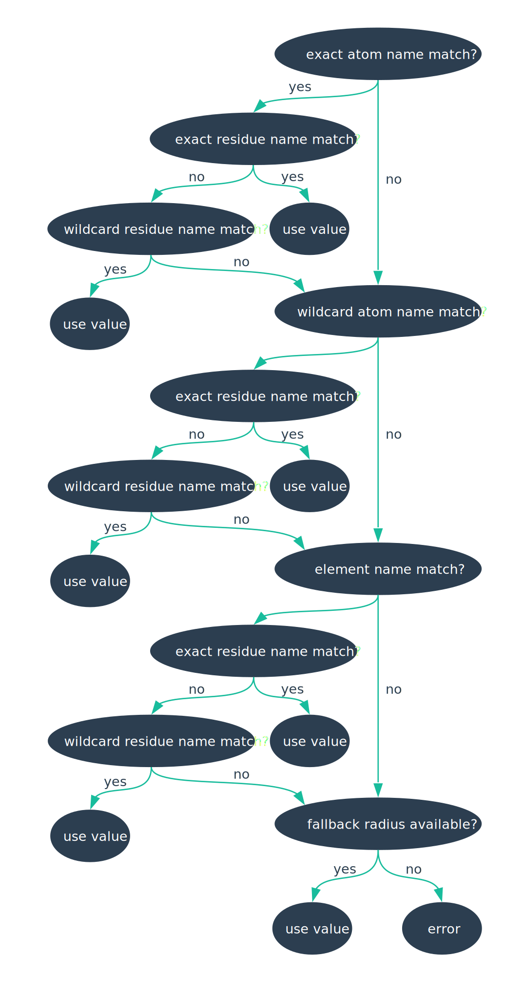

Van der Waals Radii
In order to find a permeation pathway through a channel protein, CHAP requires the van der Waals radii of the pathway-forming atoms. This page is intended to document the sources of the van der Waals radius data included in CHAP and to describe how custom data sets can be used.
Van der Waals Radius Data in CHAP
The van der Waals radius databases provided by CHAP can be found in chap/share/data/vdwradii/, where each JSON file contains an individual data set. These data sets are the same as the ones used in the HOLE programme. The original work from which these radii have been taken is referenced below:
| Database | Reference | DOI |
|---|---|---|
hole_amberuni |
Weiner, Scott J., et al. “A new force field for molecular mechanical simulation of nucleic acids and proteins.” Journal of the American Chemical Society 106.3 (1984): 765-784. | 10.1021/ja00315a051 |
hole_bondi |
Bondi, A. “van der Waals volumes and radii.” The Journal of Physical Chemistry 68.3 (1964): 441-451. | 10.1021/j100785a001 |
hole_hardcore |
Turano, Brian, Michael Pear, and David Busath. “Gramicidin channel selectivity. Molecular mechanics calculations for formamidinium, guanidinium, and acetamidinium.” Biophysical journal 63.1 (1992): 152-161. | 10.1016/S0006-3495(92)81574-6 |
hole_simple |
Weiner, Scott J., et al. “A new force field for molecular mechanical simulation of nucleic acids and proteins.” Journal of the American Chemical Society 106.3 (1984): 765-784. | 10.1021/ja00315a051 |
hole_xplore |
Smart, Oliver S., et al. “HOLE: a program for the analysis of the pore dimensions of ion channel structural models.” Journal of molecular graphics 14.6 (1996): 354-360. | 10.1016/S0263-7855(97)00009-X |
Users can can control which database is used by setting the -pf-vdwr-database flag. By default, the hole_simple database is used. Please note that the provided databases contain only van der Waals radii of atoms typically encountered in biomolecules (e.g. carbon, hydrogen, oxygen, nitrogen, and phosphorus). If the pathway forming group (specified with the -sel-pathway flag) contains any other atoms, you either have to provide a fallback van der Waals radius with the -pf-vdwr-fallback flag or provide a custom radius database as described in the following section.
Using Custom Van der Waals Radii
In order to provide a set of custom van der Waals radii to CHAP, the -pf-vdwr-database flag needs to be set to user and the -pf-vdwr-json flag needs to specify a JSON file from which to read van der Waals radii.
The easiest way of creating such a JSON file will be to adapt one of the existing files located under chap/share/data/vdwradii/. CHAP expects the JSON file to contain an array of van der Waals radius records, where each record comprises a combination of atom and residue name and the associated van der Waals radius:
{
"vdwradii": [
{"atomname": "C", "resname": "???", "vdwr": 0.185},
{"atomname": "H", "resname": "???", "vdwr": 0.100},
{"atomname": "N", "resname": "???", "vdwr": 0.175},
{"atomname": "O", "resname": "???", "vdwr": 0.165},
{"atomname": "P", "resname": "???", "vdwr": 0.210},
{"atomname": "S", "resname": "???", "vdwr": 0.200},
{"atomname": "E2", "resname": "GLN", "vdwr": 0.100},
{"atomname": "D2", "resname": "ASN", "vdwr": 0.100},
{"atomname": "LP", "resname": "???", "vdwr": 0.00},
{"atomname": "MW", "resname": "???", "vdwr": 0.00}
]
}
Note that both residue and atom names can contain wild cards. Whan associating atoms with van der Waals radii, CHAP procedes according to the decision tree below:

CHAP will always try to find an exactly matching atom name first, before trying to find a matching wild card atom name or a matching element name. A wild card atom name is one where some characters in the atom name have been replaced by questions marks, e.g. C??? would be a wild card for an atom whose name begins with C and may contain up to three further arbitrary characters. If, for example, a topology contains an atom named CA it would not be a match for record named C, but would be a wild card match for a record named C??? (it would also be a match for a record named CA). If CHAP fails to find a record with an atom name that matches that of the trial atom either exactly or with wild cards, it will try to find a record that matches the atom’s (capitalised) element name, i.e. if there are no records named CE2, VdwRadiusProvider will try to find a record named C even if no wild card like C??? is in the lookup table.
Internally, CHAP collects all records with matching atom name (or matching wild card atom name or matching element name) and will then try to find a record with matching residue name amongst these. Again, an exact name match is attempted first before trying a wild card match. In contrast to the atom name case, residue name wild cards always need to contain exactly three questionmarks (i.e. ???); partial wild cards (e.g. G??) will be overlooked. If neither an exact nor a wild card residue name match is found, CHAP will continue its lookup with attempts to match wild card atom names (if it failed to find a matching residue name for a set of matching atom names) and to find matching element names (if it failed to find a matching residue name for a set of matching wild card atom names).
If no matching record could be found after trying to match element names, the last resort is to use the fallback radius set with -pf-vdwr-fallback. If no default radius has been set, CHAP will prompt an error message.